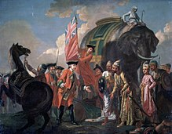

Early British Colonialism in India
European traders first reached Indian shores with the arrival of the Portuguese explorer Vasco da Gama in 1498 at the port of Calicut, in search of the lucrative spice trade. The decline of the Mughal Empire in the first half of the eighteenth century provided the British with the opportunity to establish a firm foothold in Indian politics. After the Battle of Plassey in 1757, during which the East India Company's Indian army under Robert Clive defeated Siraj ud-Daulah, the Nawab of Bengal, the Company established itself as a major player in Indian affairs, and soon afterwards gained administrative rights over the regions of Bengal, Bihar and Midnapur part of Orissa, following the Battle of Buxar in 1764. After the defeat of Tipu Sultan, most of South India came either under the Company's direct rule, or under its indirect political control as part a princely state in a subsidiary alliance.
The Rebellion of 1857
 The Indian rebellion of 1857 was a large-scale rebellion in the northern and central India
against the British East India Company's rule. It was suppressed and the British government
took control of the company. The conditions of service in the company's army and cantonments
increasingly came into conflict with the religious beliefs and prejudices of the sepoys.Mangal Pandey,
a 29-year-old sepoy, was believed to be responsible for inspiring the Indian sepoys to rise against the
British. Pandey revolted against his army regiment for protection of the cow, considered sacred by Hindus.
In the first week of May 1857, he killed a higher officer in his regiment at Barrackpore for the introduction of the rule
The Indian rebellion of 1857 was a large-scale rebellion in the northern and central India
against the British East India Company's rule. It was suppressed and the British government
took control of the company. The conditions of service in the company's army and cantonments
increasingly came into conflict with the religious beliefs and prejudices of the sepoys.Mangal Pandey,
a 29-year-old sepoy, was believed to be responsible for inspiring the Indian sepoys to rise against the
British. Pandey revolted against his army regiment for protection of the cow, considered sacred by Hindus.
In the first week of May 1857, he killed a higher officer in his regiment at Barrackpore for the introduction of the rule
The British stopped the policy of seizing land from the princes, decreed religious tolerance and began to admit Indians into the civil service (albeit mainly as subordinates). However, they also increased the number of British soldiers in relation to native Indian ones, and only allowed British soldiers to handle artillery. Bahadur Shah was exiled to Rangoon, Burma, where he died in 1862.